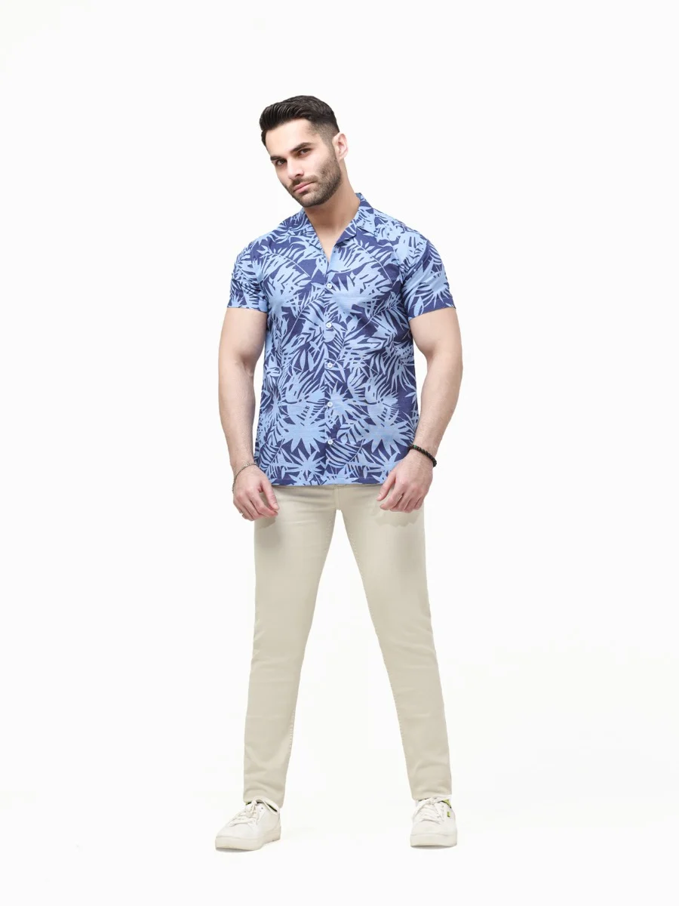
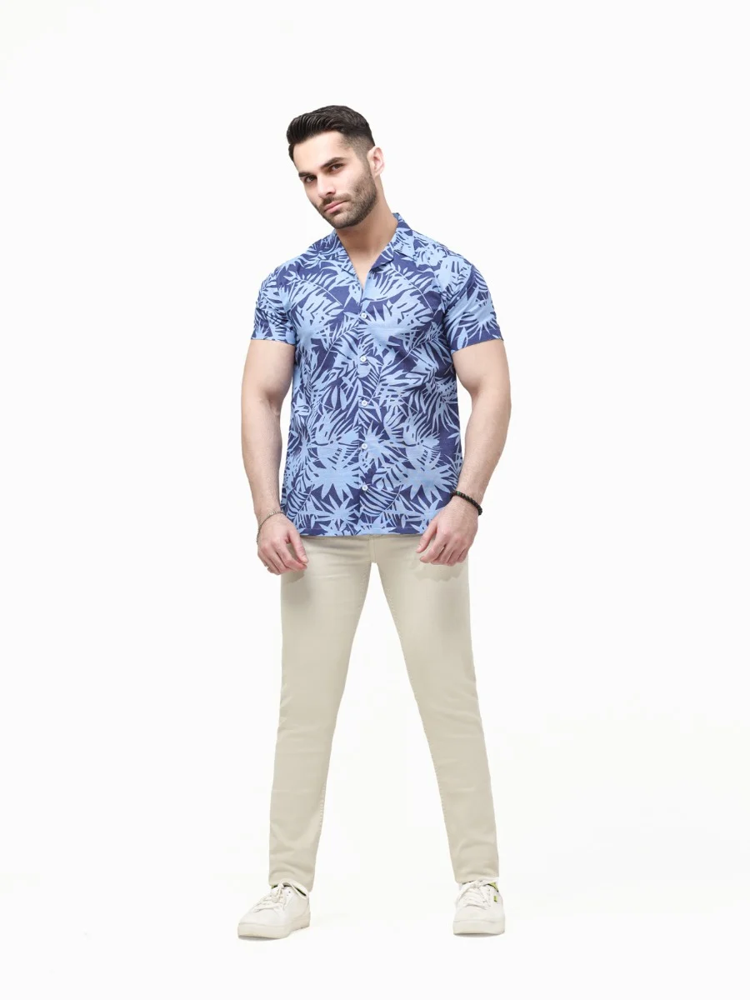

The Best Summer Wear For Men They Suaitable For Men
T-shirts: T-shirts are a staple for summer. Opt for breathable materials like cotton or linen, and choose light colors or bold patterns to embrace the summery vibe. Polo shirts are also a great alternative for a slightly more formal look
 
